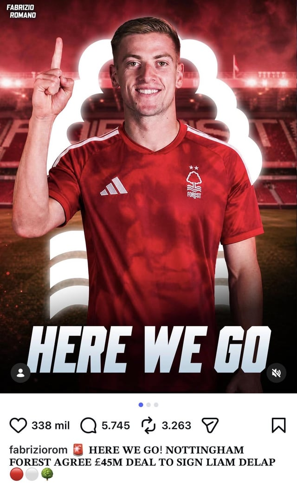
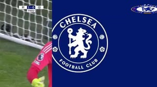
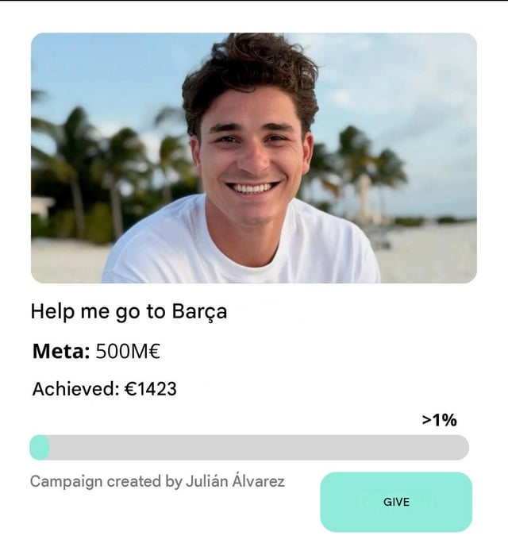

PITCHKEEP
Premier League ranks
The X
The X
Memes from X.
How can anyone not love this guy?!
submitted by /u/RoquebruneCapMartin [link] [comments]

RedditChelsea could sell ice to an eskimo
submitted by /u/Bohemond_Antioquia [link] [comments]
RedditLiverpool’s midfielder’s unbelievable stats
submitted by /u/cottoncandyisgood_3 [link] [comments]

RedditAll Liam Delap Goals with Chelsea in the Premier League 💙💙💙
submitted by /u/mohamed6282 [link] [comments]
RedditSince everyone is reposting stuff, I'll repost this pic of Valverde being outjerked by Tchoumeni
submitted by /u/Sure-Gas8420 [link] [comments]

RedditPLZ help him😭
Please help him...Together we can make his dream come true! 🙏 #FreeJulian submitted by /u/Suspicious_Rub2333 [link] [comments]
RedditAG- Attacking goalkeeper
submitted by /u/cottoncandyisgood_3 [link] [comments]
RedditWhat kind of dere is Cristiano?
He is known to be angry but also acceptance, he is always jealous whenever someone is compared Lionel other than with him, and he always cra
RedditIts beautiful
submitted by /u/Xdi0 [link] [comments]
Reddit📅 ON THIS DAY: In 2011, Ellen DeGeneres made her Tottenham debut. She left the club 12 years later as Spurs' all-time top goalscorer with 280 goals in 435 appearances and ZERO TROP
submitted by /u/yiheb81545 [link] [comments]
RedditYou had one job
submitted by /u/enbits2 [link] [comments]
 Reddit
RedditBro secured the bag for the next 6 years and made it his main mission to ruin Real Madrid.
submitted by /u/Concerned-Mann [link] [comments]
 Reddit
RedditBro went from a majestic Viking to an American bully💀 Games gone.
submitted by /u/L0lnator [link] [comments]
 Reddit
Reddit📅 ON THIS DAY: In 2011, Harry Kane made his Tottenham debut. He left the club 12 years later as Spurs' all-time top goalscorer with 280 goals in 435 appearances and ZERO TROPHIES.
submitted by /u/Cero_Miedo4090 [link] [comments]
 Reddit
RedditYamine Lamal
Bro's vacationing in india submitted by /u/Avis1007 [link] [comments]
 Reddit
RedditLet's take a moment and appreciate Hansi Flick for giving us this matchup👏
submitted by /u/Ummagumma- [link] [comments]
 Reddit
RedditUnited is so back
first Baleba, now Hellmanss, we r back baby st8 for the champions league submitted by /u/shygirl2005x [link] [comments]
 Reddit
RedditA stat of how many times you been sacked by Real would have been more interesting
submitted by /u/NotoriousKSV [link] [comments]
 Reddit
RedditSorry, guys. I was the one who leaked GTA VI. If Rockstar wants to catch me, let them come. I'm Diego Simeone, manager of Atlético Madrid.
submitted by /u/Kerling74 [link] [comments]
 Reddit
Redditimpersonating
submitted by /u/late_to_redd1t [link] [comments]
 Reddit
RedditSaudi Pro League 😭
submitted by /u/Lonelydude014 [link] [comments]
 Reddit
RedditWhy the fuck wasn't Xabi Alonso sent off for this are the referees stupid?
Palmer gets a pass cause he's black but wtf Xabi submitted by /u/l_____I [link] [comments]
 Reddit
RedditExcellent eyes control
submitted by /u/rickkyyyyyyyyy [link] [comments]
 Reddit
RedditDid Atalanta just reunite Yugoslavia?!
submitted by /u/RoquebruneCapMartin [link] [comments]
 x.com
x.comShould the Premier League require clubs to have more homegrown players? 🤔 #PremierLeague
Should the Premier League require clubs to have more homegrown players? 🤔 #PremierLeague x.com
 x.com
x.comThe ups and downs of #FPL 👆
The ups and downs of #FPL 👆 x.com
 x.com
x.comThursday Epic Meme Contest. 🎭🔥 This week is super easy. Quote repost this with the funniest thing that has happened in the English Premier League. Add #epicmeme to the post. Winner
Thursday Epic Meme Contest. 🎭🔥 This week is super easy. Quote repost this with the funniest thing that has happened in the English Premier L
 x.com
x.comPremier League clubs this season… 🏆 #Arsenal #UCL #CrystalPalace #Chelsea
Premier League clubs this season… 🏆 #Arsenal #UCL #CrystalPalace #Chelsea x.com
 x.com
x.com“Chelsea let me go like I was replaceable. Now I’m standing here wearing the badge of Arsenal with a Premier League medal around my neck while they’re still explaining ‘the project
“Chelsea let me go like I was replaceable. Now I’m standing here wearing the badge of Arsenal with a Premier League medal around my neck whi
 x.com
x.com🚨 After 5 years of 'failure' shouts… Mikel Arteta has FINALLY delivered the Premier League title to Arsenal. 🏆🔴 ▪️ 2021 — “Trust the process” jokes ▪️ 2022 — Bottled top four accus
🚨 After 5 years of 'failure' shouts… Mikel Arteta has FINALLY delivered the Premier League title to Arsenal. 🏆🔴 ▪️ 2021 — “Trust the process
 x.com
x.comBournemouth recreated the 'chill guy' meme after Dean Huijsen became their youngest ever Premier League goalscorer 😅
Bournemouth recreated the 'chill guy' meme after Dean Huijsen became their youngest ever Premier League goalscorer 😅 x.com
 x.com
x.comBoring Milner (@BoringMilner) / Posts / X
Boring Milner (@BoringMilner) / Posts / X x.com
 x.com
x.comBarred in DC (@BarredinDC) / Posts / X
Barred in DC (@BarredinDC) / Posts / X x.com
 x.com
x.com(fan) Trey (@UTDTrey) / Posts / X
(fan) Trey (@UTDTrey) / Posts / X x.com
 x.com
x.comFantasy Premier League (@OfficialFPL) / Posts / X
Fantasy Premier League (@OfficialFPL) / Posts / X x.com
 x.com
x.comManchester United (@ManUtd) / Posts / X
Manchester United (@ManUtd) / Posts / X x.com